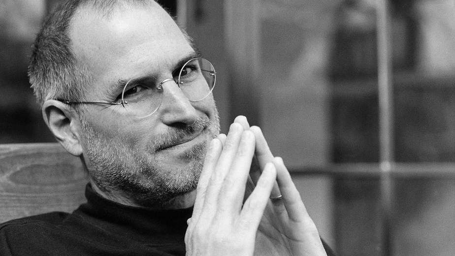

Seu trabalho vai preencher uma parte grande da sua vida, e a única maneira de ficar realmente satisfeito é fazer o que vc acredita ser um ótimo trabalho,
E a única maneira de fazer um exelente trabalho é amar o que você faz.
Você não consegue ligar os pontos, olhando pra frente; você só consegue ligá-los olhando para trás.Então você tem que confiar que os pontos se ligarão algum dia no futuro. você tem que confiar em algo
-seu instinto,destino,vida,carma, o que for .Esta abordagem nunca me desapontou, e fez toda diferencia na minha vida.
Ásvez a vida te acerta na cabeça com um tijolo.
não perca a fé. Estou convecido de que a única coisa que me manteve no caminho foi amar o que eu fazia
Você precisa encontrar aquilo que ama.
Steve jobs (1955-2011)foi umempresário norte americano,
fundou a Apple criou o "Macintosh" o "iPone" e o "iPad"
A Apple revolucionou a induústria de computadores, os
filmes de animação, o mundo da música e todos os telefones celulares.

Steve Paul Jobs nasceu em São Franscisco,Califórnia
no dia 24 de fevereiro de 1955. filho do sirio Abdulfattan jandali
e de Joanne Schieble,foi adotado, por Paul Jobs.
mecãnico e membro da guarda costeira, e da contadora Carla Jobs,
A familia morava em Mountai View, na Califórnia, dentro da
área que mais tarde se tornaria conhecida como Vale do Silicio,
Ainda pequeno viu seu pai montar e desmontar aparelhos
eletrónicos na garagem da familia.
Depois do curso básico Jobs cursou a Homestead High School entre 1968 e 1972. Nessa época conheceu Steve Wozniak (1950), que estudava na Universidade da Califórnia, em Berkley, e era especialista em fazer programas e circuitos integrados.
Primeiro emprego
Em 1974 Steve Jobs trabalhou com designer de videogame na Atari,
depois de vários meses Steve deixou a empresa e viajou para a india,
em busca de enriquecimento espiritual.
Criação da Apple
Em 1976 jobs e wozniak intalaram uma"fabrica" de,
computadores na garagem da familia de jobs na Califórnia,
Em 1976 é lançando o computador "Apple 1", o primeiro,
primeiro computador pessoal e vendido já montado,
que era apenas uma placa mãe coberta com alguns chips e instalada em uma caixa de madeira.
Em 1977 é lançado o computador "Apple II", que apresentava um mouse e um disco rígido interno. Com o passar dos anos as criações de Jobs e Wozniak revolucionaram a indústria de computadores tornando as máquinas menores e mais baratas.
Em janeiro de 1984 é lançado o "Macintosh", apelidado de "torradeira bege", que esquentava muito, pois não tinha ventilador. Apesar do sucesso das vendas e do desempenho superior aos PCs da IBM, o Macintosh não era compatível com a IBM. Centralizador e explosivo, nesse mesmo ano Steve Jobs é afastado de sua própria empresa por divergir das táticas de vendas.